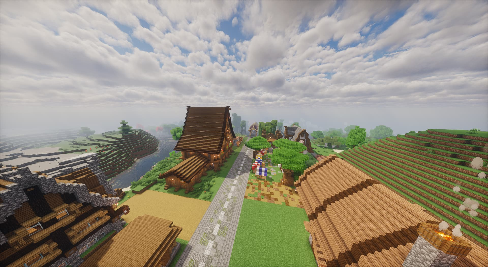
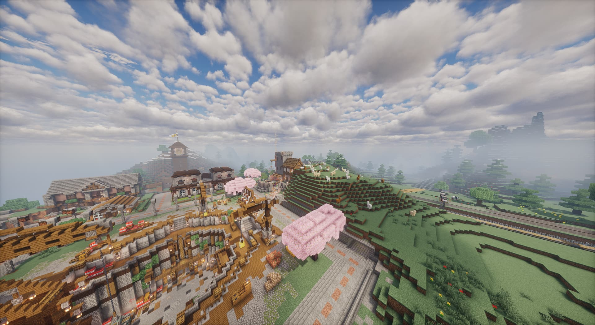
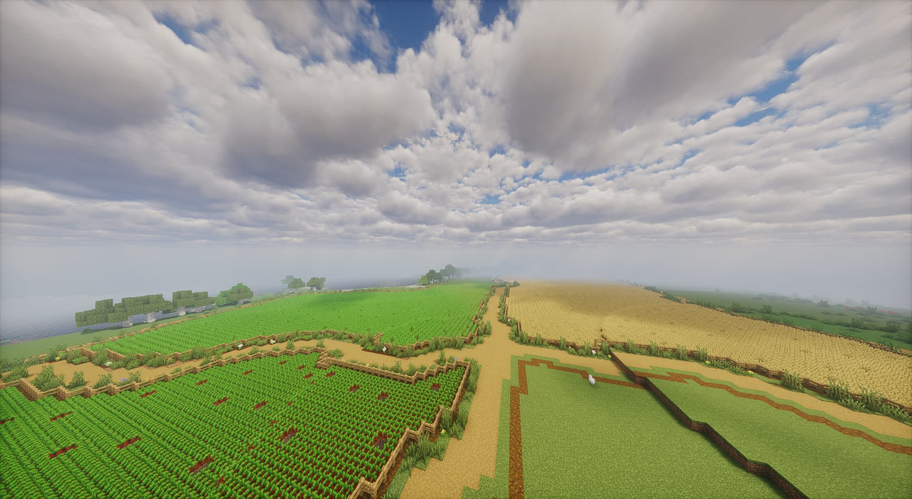
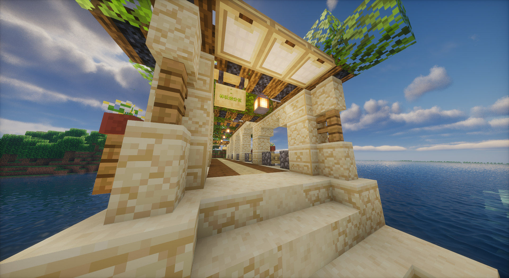
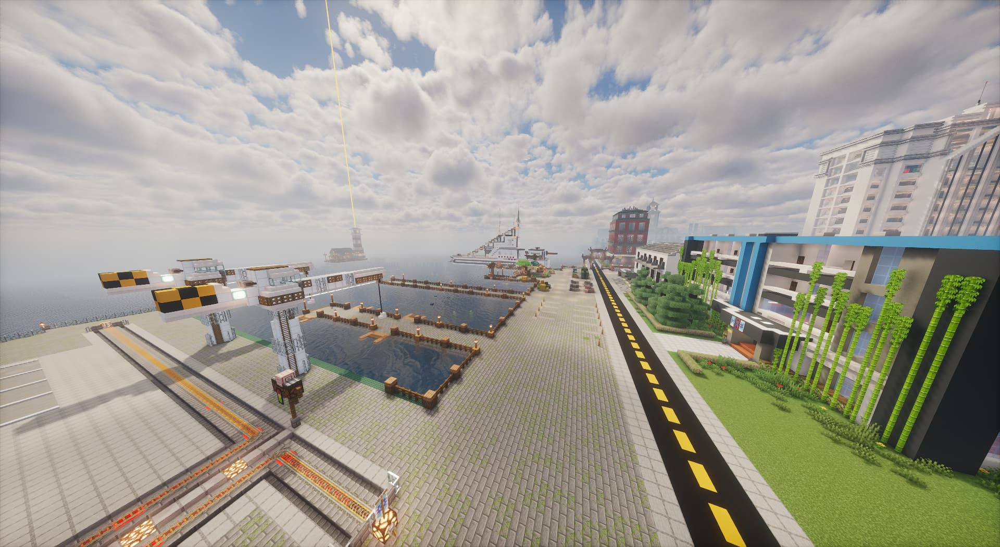

新区热门景区总览
四处特色景观与一幅全域航拍，记录新区的地貌与日常。

东台莱德 · 城市人文
夜景灯光、中央公园、网红商业街

采矿小镇 · 工业地貌
巨型矿坑、冶炼工厂、货运铁路线

林沃森 · 田园山水
连片农田、温室大棚、临水乡村

眼镜岛 · 海岛海岸
跨海大桥、海防堡垒、海上日出
东台莱德 · 城市人文观光区
城市打卡 夜景胜地 休闲公园新区核心人文游览区，规整现代居民建筑群、中央景观湖、商业步行街、红石科技展馆全部对外开放。白天城市整洁开阔，黄昏灯光逐步亮起，夜间全景氛围感拉满，是游客拍照打卡首选地点。
采矿小镇 · 工业地貌观光区
工业风摄影 巨型矿坑 铁路沿线独特重工业地貌观光点，多层阶梯露天矿场、大型冶炼工厂、货运铁路干线构成硬核工业景观。高低错落山体与机械厂房结合，适合工业风、废墟风摄影，沿途设有多处铁路观景台。
林沃森 · 田园山水观光区
治愈田园 溪流湿地 乡村民宿新区生态休闲核心，连片方格农田、温室果蔬大棚、沿河乡村聚落与天然内河湿地融为一体。水系环绕植被茂密，四季风光柔和治愈，适合散心漫步、田园写生、静水摄影。
眼镜岛 · 海岛海岸观光区
滨海日出 跨海大桥 海岛堡垒独立近海岛屿观光点，四面环海白色沙滩环绕，海防古堡、港口码头、跨海长桥构成独特滨海景观。东岸海面视野开阔，是全域最佳日出拍摄地，跨海大桥远景氛围感极强。

全域高空航拍全景
上帝视角 全域规划 昼夜双景高空俯瞰完整收录四大景区整体布局，清晰展示城市、矿区、田园、海岛地理分布与交通路网，包含白昼清晰版图、夜间全域灯光两套全景素材，直观感受整片观光区域规模。
新区建筑建设人员合影展示
每一次同行都值得留存。从早期城区到周年纪念，翻看属于建造者的故事。

艺术图合影
此图为正副区长皮肤艺术图合影

5周年纪念
新年广场建成，副区长拍照纪念

与区长在一起
区长参加新城区建设活动。图为副区长

敌力凯再次回归
敌力凯再次参与建造时合影

与敌力凯合影
敌力凯（化名）第一位加入参加建设的小伙伴。

早期城区影像
此图为早期城区的旗帜图